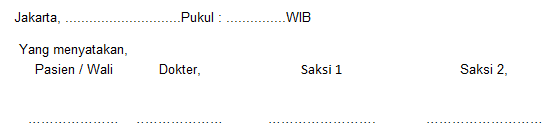

| Dokter Pelaksana : | ||||
|---|---|---|---|---|
| Pemberi Informasi : | ||||
| Penerima Informasi : | ||||
| No | ||||
| 1 | Diagnosa (WD & DD) | |||
| 2 | Dasar Diagnosa | |||
| 3 | Tindakan Kedokteran | |||
| 4 | Indikasi Tindakan | |||
| 5 | Tujuan | |||
| 6 | Prognosis | |||
| 6 | Prognosis | |||
| 7 | Kemungkinan Komplikasi/Resiko | |||
Dengan ini menyatakan bahwa saya telah menerangkan hal - hal secara benar dan jelas serta memberikan kesempatan untuk bertanya dan / atau berdiskusi |
| |||
Dengan ini menyatakan bahwa saya telah menerima informasi sebagaimana diatas yang saya beri tanda / paraf di kolom kanannya dan telah memahaminya |
| |||
Yang bertanda tangan dibawah ini, saya nama...................umur....tahun....(L/P) Alamat :............................................................................................................... | ||||
| Dengan ini menyatakan MENOLAK untuk dilakukan tindakan ..............................
............. terhadap saya/ ............... saya, dengan : Nama :Umur : ...... Tahun (L/P) Alamat : Saya memahami perlunya tindakan tersebut sebagaimana telah dijelaskan kepada saya, termasuk resiko dan komplikasi yang mungkin terjadi. Saya juga menyadari oleh karena ilmu kedokteran bukanlah ilmu pasti, maka keberhasilan tindakan kedokteran bukanlah keniscayaan, melainkan sangat tergantung kepada izin Tuhan Yang Maha Esa.  | ||||